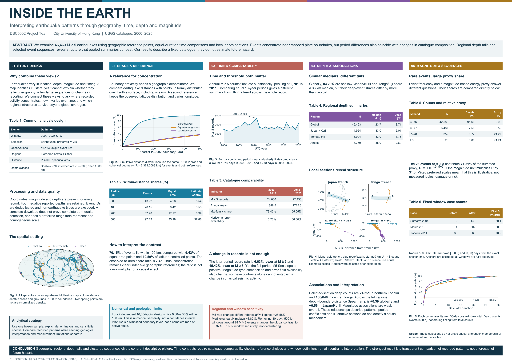

DSC5002 · 最新成果入口
Inside the Earth
根据 2.0 扩充实验、重新设计的五列学术海报

只以这里链接的最新版作为交付。原始数据与组员投稿保留作复核依据；旧海报和旧海报动画截图已移除。
2.0 与 3.0 的整合说明 · 组员成果评审 · 验证记录 · 在线成果
DSC5002 · 最新成果入口
根据 2.0 扩充实验、重新设计的五列学术海报

只以这里链接的最新版作为交付。原始数据与组员投稿保留作复核依据；旧海报和旧海报动画截图已移除。
2.0 与 3.0 的整合说明 · 组员成果评审 · 验证记录 · 在线成果